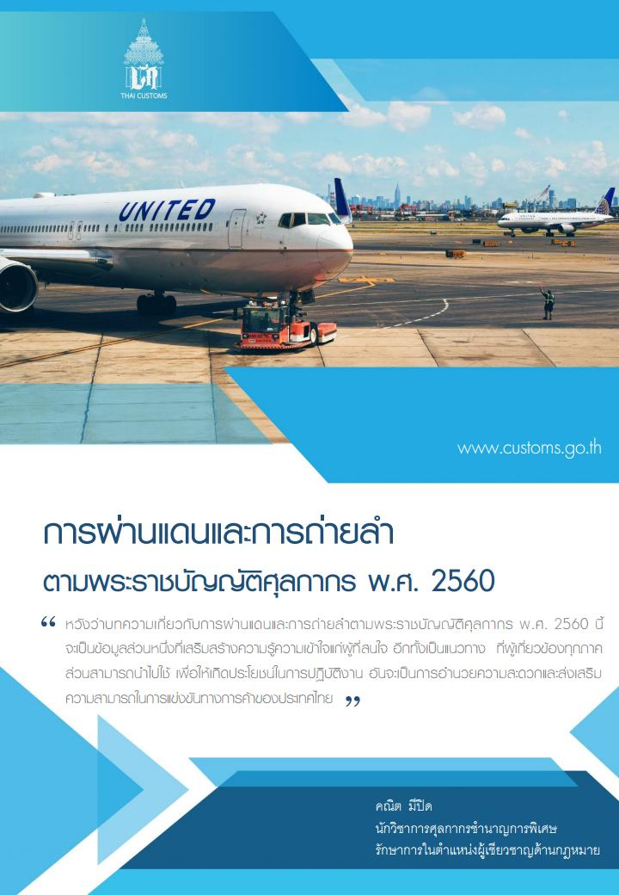

พิธีการสำหรับสินค้าถ่ายลำ/ผ่านแดน

นิยาม
การผ่านแดน
การผ่านแดน คือ การขนส่งของผ่านประเทศไทย จากด่านศุลกากรแห่งหนึ่งที่ขนส่งของเข้ามา ไปยังด่านศุลกากรอีกแห่งหนึ่งที่ขนส่งของออกไป ภายใต้การควบคุมของศุลกากร โดยมีจุดเริ่มต้นและสิ้นสุดของการขนส่งอยู่นอกราชอาณาจักร การขนส่งของนั้นอาจมีการเปลี่ยนถ่ายยานพาหนะ การเก็บรักษาของ การเปลี่ยนภาชนะบรรจุเพื่อประโยชน์ในการขนส่ง การเปลี่ยนรูปแบบการขนส่งได้ แต่ทั้งนี้ ต้องไม่มีการใช้ประโยชน์ใดๆ ซึ่งของนั้น หรือมีพฤติกรรมใดๆ เพื่อประโยชน์ทางการค้าเกี่ยวกับของดังกล่าวในระหว่างการผ่านประเทศไทย การผ่านแดนในปัจจุบัน มี 2 รูปแบบ คือ
การผ่านแดนตามความตกลงระหว่างประเทศ ได้แก่
ความตกลงว่าด้วยการขนส่งทางถนนระหว่างรัฐบาลแห่งราชอาณาจักรไทยและรัฐบาลแห่งสาธารณรัฐประชาธิปไตยประชาชนลาว ผู้ที่ทำหน้าที่รับผิดชอบการขนส่ง เรียกว่า ผู้ขนส่งผ่านแดน ซึ่งต้องเป็นผู้ที่ได้รับอนุมัติจากกรมการขนส่งทางบกในการทำหน้าที่ขนส่งของผ่านแดน และ การขนส่งต้องดำเนินการความตกลงฯ ในเรื่องด่านศุลกากรที่เป็นด่านศุลกากรผ่านเข้าและออก และ เส้นทางการขนส่ง ดาวน์โหลดเอกสาร
ความตกลงว่าด้วยการขนส่งสินค้าผ่านแดนระหว่างประเทศไทยกับประเทศมาเลเซีย โดยการรถไฟแห่งประเทศไทย เป็นผู้รับผิดชอบในฐานะผู้ขนส่งผ่านแดน เนื่องจากเป็นการขนส่งสินค้าของมาเลเซียระหว่างฝั่งตะวันออกไปยังฝั่งตะวันตกของคาบสมุทรมาเลเซียโดยทางรถไฟในประเทศไทย (ด่านศุลกากรที่รับผิดชอบ คือ ด่านศุลกากรปาดังเบซาร์ และ ด่านศุลกากรสุไหงโก-ลก)
การผ่านแดนตามความตกลง GATT 1994 ผู้ที่ทำหน้าที่รับผิดชอบการขนส่งนี้ เรียกว่า ผู้ขอผ่านแดน ดาวน์โหลดเอกสาร
การถ่ายลำ
การถ่ายลำ คือ การถ่ายของจากยานพาหนะหนึ่งที่ขนส่งของเข้ามาในประเทศไทย ไปยังอีกยานพาหนะหนึ่งที่ขนส่งของออกไปนอกราชอาณาจักร ภายใต้การควบคุมของศุลกากรในด่านศุลกากรแห่งเดียวกัน โดยมีจุดเริ่มต้นและสิ้นสุดของการขนส่งอยู่นอกราชอาณาจักร ดาวน์โหลดเอกสาร
ความรับผิดในเรื่องอากร
ความรับผิดในเรื่องอากรขาเข้า และ อากรขาออก
- ของผ่านแดน หรือ ถ่ายลำ ที่ได้ยื่นใบขนสินค้าตามแบบ และ ดำเนินการตามหลักเกณฑ์ วิธีการและเงื่อนไขที่อธิบดีกำหนด และได้นำของออกไปนอกประเทศไทยภายใน 30 วัน นับแต่วันที่นำเข้ามาในราชอาณาจักร ของนั้นไม่อยู่ภายใต้ความรับผิดที่จะต้องเสียอากร กล่าวคือ ไม่ต้องชำระอากรขาเข้า และ อากรขาออก
- ของผ่านแดน หรือ ถ่ายลำที่มีการยื่นคำขอเปลี่ยนเป็นการนำเข้าภายในกำหนด 30 วัน นับแต่วันที่นำเข้ามาในราชอาณาจักร และได้ปฏิบัติครบถ้วนตามกฎหมายศุลกากรและกฎหมายอื่นที่เกี่ยวกับการนำเข้า ของนั้นต้องชำระอากรขาเข้าโดยคำนวณตามสภาพของ ราคาของ และพิกัดอัตราศุลกากร ที่เป็นอยู่ในเวลาที่นำของนั้นเข้ามาในราชอาณาจักร
- ของผ่านแดนตามความตกลงว่าด้วยการขนส่งทางถนนระหว่างรัฐบาลแห่งราชอาณาจักรไทยและรัฐบาลแห่งสาธารณรัฐประชาธิปไตยประชาชนลาว ที่ไม่ได้นำออกไปนอกประเทศไทย หรือ ไม่มีการยื่นคำขอเปลี่ยนเป็นการนำเข้า ภายใน 90 วัน นับแต่วันที่นำเข้ามาในราชอาณาจักร ของนั้นตกเป็นของตกค้าง
- ของผ่านแดนตามความตกลง GATT 1994 หรือ ของถ่ายลำ ที่ไม่ได้นำออกไปนอกประเทศไทย หรือ ไม่มีการยื่นคำขอเปลี่ยนเป็นการนำเข้า ภายใน 30 วัน นับแต่วันที่นำเข้ามาในราชอาณาจักร ของนั้นตกเป็นของแผ่นดิน
จดทะเบียนเป็นผู้ขอผ่านแดน
การขอเป็นผู้ขนส่งผ่านแดน ผู้ขอผ่านแดน ผู้ขอถ่ายลำ
ผู้ที่ประสงค์จะขอเป็นผู้ขนส่งผ่านแดน หรือ ผู้ขอผ่านแดน หรือ ผู้ขอถ่ายลำ ต้องเป็นผู้ที่มีคุณสมบัติตามที่กรมศุลกากรกำหนดและยื่นคำขออนุมัติ เมื่อได้รับอนุมัติแล้วต้องทำสัญญาประกันทัณฑ์บน และวางหลักประกันเป็นเงินสดหรือหนังสือค้ำประกันของธนาคารเป็นประกันการดำเนินการ โดยผู้ขอผ่านแดนที่จดทะเบียนเป็นผู้ขอถ่ายลำด้วยสามารถใช้หลักประกันจำนวนเดียวกันค้ำประกันการดำเนินการทั้งสองประเภทได้ และ หากเป็นผู้ประกอบการ AEO สามารถใช้หลักประกันของ AEO ค้ำประกันได้ด้วย แต่เฉพาะผู้ขอผ่านแดนที่ขอเป็นผู้ขนส่งผ่านแดนด้วยต้องวางหลักประกันแยกกัน โดยหลักประกันดังกล่าว ครอบคลุมการดำเนินการทุกครั้งที่มีการขนส่ง ทั้งนี้ผู้ได้รับอนุมัติเป็นผู้ขนส่งผ่านแดน หรือ ผู้ขอผ่านแดน หรือ ผู้ขอถ่ายลำ อาจเลือกการวางหลักประกัน เป็นแบบรายเที่ยวก็ได้
พิธีการศุลกากร
พิธีการศุลกากรในการขนย้ายของผ่านแดน และ ถ่ายลำ
ผู้ขนส่งผ่านแดน หรือ ผู้ขอผ่านแดน หรือ ผู้ขอถ่ายลำ ที่ได้รับอนุมัติ ต้องจัดทำใบขนสินค้าผ่านแดน หรือใบขนสินค้าถ่ายลำในระบบอิเล็กทรอนิกส์แบบไร้เอกสารตามที่กรมศุลกากรกำหนด ยกเว้น การผ่านแดนทางรถไฟตามความตกลงว่าด้วยการขนส่งสินค้าผ่านแดนระหว่างประเทศไทยกับประเทศมาเลเซีย ให้ใช้ใบขนสินค้าผ่านแดนในรูปแบบกระดาษ เรียกว่า แบบ 448
การผ่านแดนตามพระราชบัญญัติศุลกากร พ.ศ. 2560 มาตรา 102 วรรคสาม กำหนดให้ “การผ่านแดนที่มีการข้ามแดนทางบกให้กระทำได้ต่อเมื่อมีความตกลงระหว่างประเทศ” หมายความว่า การผ่านแดนที่มีการข้ามแดนทางบกไม่ว่าจะมีการผ่านเข้าหรือผ่านออกจะต้องมีการทำความตกลงกับประเทศที่มีเขตแดนทางบกติดต่อกับประเทศไทย หากยังไม่มีความตกลงจะไม่สามารถปฏิบัติพิธีการผ่านแดน ต่อกันได้
ปัจจุบันประเทศไทยมีความตกลงเกี่ยวกับการผ่านแดนอยู่ 2 ความตกลง คือ การผ่านแดนตามความตกลงว่าด้วยการขนส่งทางถนนระหว่างรัฐบาลแห่งราชอาณาจักรไทยและรัฐบาลแห่งสาธารณรัฐประชาธิปไตยประชาชนลาว และการผ่านแดนความตกลงว่าด้วยการขนส่งสินค้าจากฝั่งตะวันออกไปยังฝั่งตะวันตกของคาบสมุทร มาเลเซียและกลับกันผ่านแดนไทยโดยการรถไฟแห่งประเทศไทย (90 วัน)
MOU (Memorandum of Understanding) หรือเรียกกันว่า บันทึกความเข้าใจ หมายถึง เอกสารที่บันทึกข้อตกลงความร่วมมือ หรือความเข้าใจระหว่างองค์กร หน่วยงานภาครัฐ และเอกชน ซึ่งเมื่อทั้งสองฝ่าย มีความเห็นตรงกัน รับทราบถึงรายละเอียดในบันทึกข้อตกลง และยอมรับข้อตกลงที่ทำร่วมกันแล้ว ตัวแทนผู้มีอำนาจของทั้งสองฝ่ายจะลงนามในบันทึกข้อตกลงนั้น เพื่อรับรองว่า ทั้งสองฝ่ายพึงพอใจกับข้อตกลงที่ทำร่วมกัน และ MOU ฉบับนี้ก็จะมีผลบังคับใช้เมื่อทั้งสองฝ่ายได้ลงนามในเอกสารนั้นเป็นที่เรียบร้อยแล้ว (30 วัน)
ข้อควรทราบ
กรมศุลกากรเพิ่มการตรวจสอบข้อมูล [24/12/62]
ศูนย์เทคโนโลยีสารสนเทศและการสื่อสาร ขอแจ้งการปรับปรุงระบบ โปรแกรมรับใบขนสินค้าถ่ายลำผ่านแดน และใบเคลื่อนย้ายของผ่านแดน นำขึ้นใช้งานจริง ภายในวันที่ 3 มกราคม 2563 โดยระบบมีเงื่อนไขการตรวจสอบข้อมูลที่ยื่นทำใบขนสินค้าถ่ายลำ/ผ่านแดน และใบเคลื่อนย้ายของผ่านแดน ดังนี้
- ตรวจสอบค่า Port สถานที่ตรวจปล่อยที่ยื่นทำใบขนสินค้าถ่ายลำ/ผ่านแดน และใบเคลื่อนย้ายของผ่านแดน ต้องมีค่า Indicator สอดคล้องกับค่า Area Code ใน Reference File ที่กรมศุลกากรกำหนดว่า Port Code นั้นเป็นสถานที่ตรวจปล่อยขาเข้า หรือขาออก หากค่าที่ส่งมานั้นไม่ถูกต้องระบบจะทำการ Reject
- ตรวจสอบการหมดอายุของการวางค้ำประกันแบบหนังสือ สำหรับพิธีการถ่ายลำผ่านแดน หากหนังสือการวางค้ำประกันหมดอายุจะไม่สามารถส่งข้อมูลใบขนสินค้าถ่ายลำผ่าน ผ่านแดนได้
บทความทางวิชาการ
การผ่านแดนตามพระราชบัญญัติศุลกากร พ.ศ. 2560
บทความทางวิชาการเรื่อง “การผ่านแดนตามพระราชบัญญัติศุลกากร พ.ศ. 2560”



- สอบถามข้อมูลเพิ่มเติมได้ที่ : สำนักงานศุลกากรท่าเรือกรุงเทพ (สทก.) กรมศุลกากร เลขที่ 1 ถ.สุนทรโกษา คลองเตย กทม. 10110
- หมายเลขโทรศัพท์ : 0-2667-7000 ต่อ 20-5604
- อีเมล์ : 70000100@customs.go.th
- ที่มา : กรมศุลกากร.
- วันที่ปรับปรุงล่าสุด : 6 กรกฎาคม 2561